Copa do Mundo
Catar 2022
GRUPO A
21/11 (segunda-feira)
Senegal x Holanda
7h - Al Thumama
25/11 (quinta-feira)
Equador x Holanda
13h - Khalifa
29/11 (terça-feira)
Catar x Holanda
12h - Al Bayt
ESCALAÇÃO
HISTÓRIA
Seleção Holandesa
A seleção holandesa participará de sua décima edição da Copa do Mundo de Futebol em 2022. A seleção de futebol masculino dos Países Baixos é conhecida como Oranje, Holanda, Laranja Mecânica, entre outros apelidos. A seleção holandesa foi três vezes vice-campeã (1974, 1978 e 2010), terceira colocada em 2014 e quarta colocada em 1998, mas ainda não foi campeã do mundo. A Laranja Mecânica de Rep, Cruijff, Brandts, Haan e Rensenbrink encantou o mundo com um sistema de jogo revolucionário. Na Eurocopa a seleção da Holanda foi campeã em 1988, contando com os craques Marco van Basten, Rijkaard, Koeman e Gullit. Apesar de ser mais conhecida como seleção holandesa ou seleção da Holanda, a seleção neerlandesa (seleção dos Países Baixos ou seleção da Neerlândia) representa todo os Países Baixos (também chamado de Neerlândia ou Nederlândia). A Holanda é uma região histórica dos Países Baixos, dividida atualmente entre duas províncias, a Holanda do Norte ("Noord-Holland" em neerlandês) cuja capital é Amsterdã (Amsterdão) e a Holanda do Sul ("Zuid-Holland" em neerlandês) cuja capital é Roterdã (Roterdão)
Seleção da Holanda (Países Baixos) nas Copas do Mundo
A seleção holandesa participará de sua décima edição da Copa do Mundo de Futebol em 2022. A seleção de futebol masculino dos Países Baixos é conhecida como Oranje, Holanda, Laranja Mecânica, entre outros apelidos. A seleção holandesa foi três vezes vice-campeã (1974, 1978 e 2010), terceira colocada em 2014 e quarta colocada em 1998, mas ainda não foi campeã do mundo. A Laranja Mecânica de Rep, Cruijff, Brandts, Haan e Rensenbrink encantou o mundo com um sistema de jogo revolucionário. Na Eurocopa a seleção da Holanda foi campeã em 1988, contando com os craques Marco van Basten, Rijkaard, Koeman e Gullit.
Apesar de ser mais conhecida como seleção holandesa ou seleção da Holanda, a seleção neerlandesa (seleção dos Países Baixos ou seleção da Neerlândia) representa todo os Países Baixos (também chamado de Neerlândia ou Nederlândia).
A Holanda é uma região histórica dos Países Baixos, dividida atualmente entre duas províncias, a Holanda do Norte ("Noord-Holland" em neerlandês) cuja capital é Amsterdã (Amsterdão) e a Holanda do Sul ("Zuid-Holland" em neerlandês) cuja capital é Roterdã (Roterdão).
O Reino dos Países Baixos é consituído por quatro nações: os Países Baixos, na Europa; Aruba, Curaçau e São Martinho (Sint Maarten), no Caribe. As nações do caribe dos Países Baixos também possuem seleções nacionais. A seleção de Curaçau é considerada a sucessora da Seleção das Antilhas Neerlandesas, também chamadas de Antilhas Holandesas.
Retrospecto da seleção da Holanda (Países Baixos) em Copas do Mundo
1930 - Não disputou
1934 - Eliminada na 1ª Fase
1938 - Eliminada na 1ª Fase
1950 - Não disputou
1954 - Não disputou
1958 - Não se classificou
1962 - Não se classificou
1970 - Não se classificou
1974 - Vice-campeã
1978 - Vice-campeã
1982 - Não se classificou
1986 - Não se classificou
1990 - Eliminada nas Oitavas de Final
1994 - Eliminada nas Quartas de Final
1998 - 4º lugar
2002 - Não se classificou
2006 - Eliminada nas Oitavas de Final
2010 - Vice-campeã
2014 - 3º lugar
2018 - Não se classificou
2022 - Disputará a Copa do Mundo do Catar de 2022
CONVOCADOS
GOLEIROS
Justin Bijlow
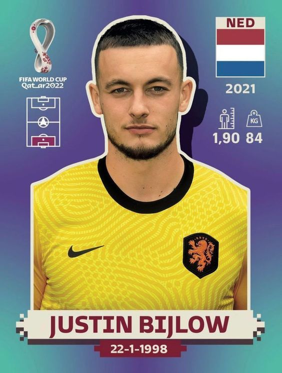Jasper Cillessen
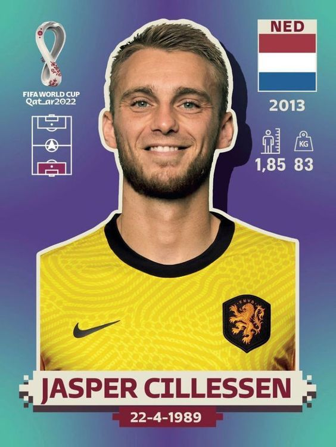ZAGUEIROS
Daley Blind
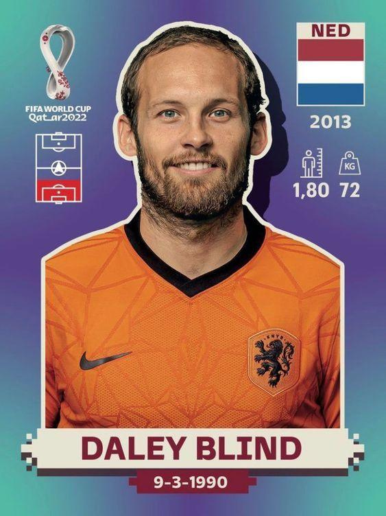Matthijs de Ligt

Virgil Van Dijk

Stefan de Vrij
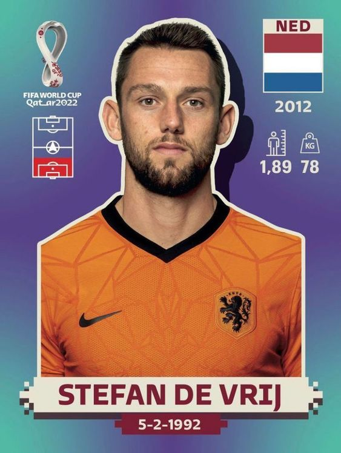Denzel Dumfries
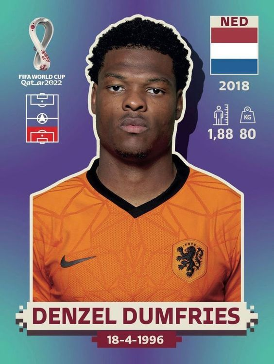MEIO CAMPISTAS
Steven Berghuis
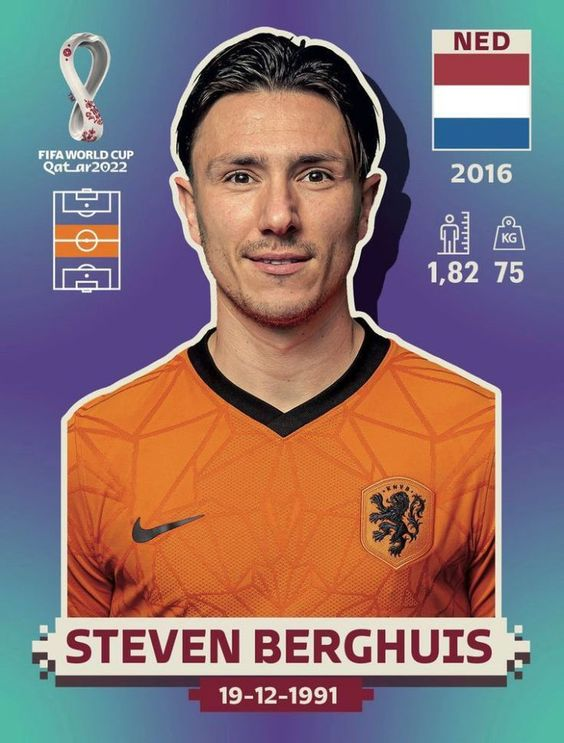Frenkie de Jong

Ryan Gravenberch

Davy Klaassen
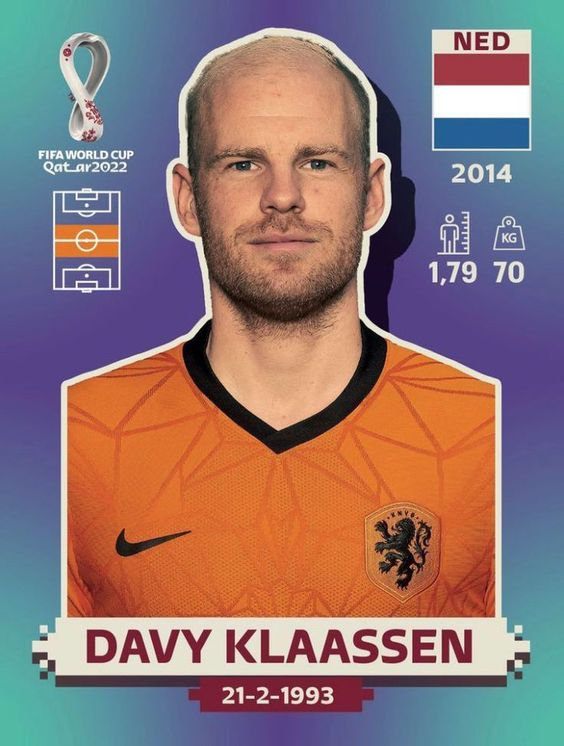Teun Koopmeiners
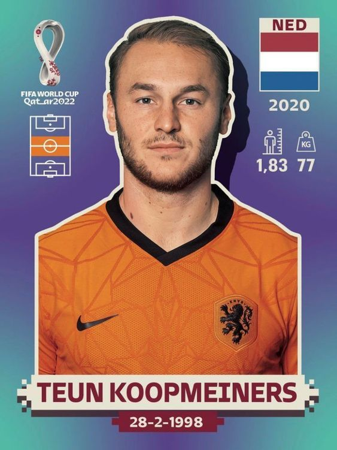Georginio Wijnaldum
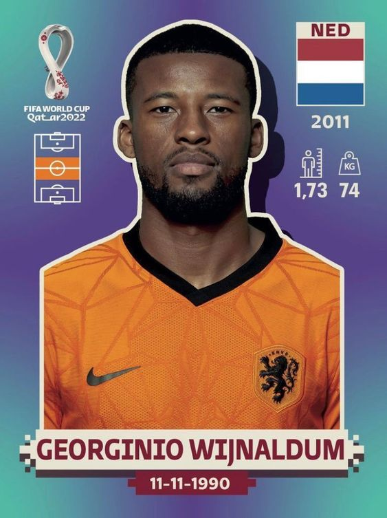ATACANTES
Steven Bergwijn
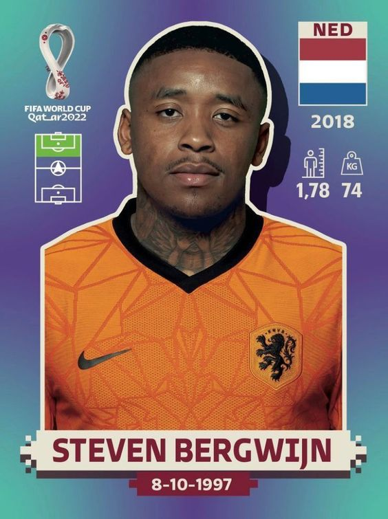Memphis Depay
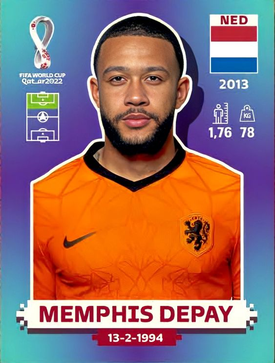Cody Gakpo
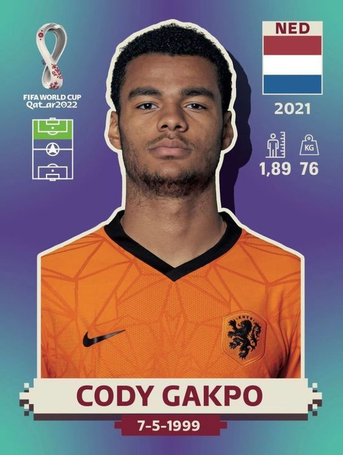Donyell Malen
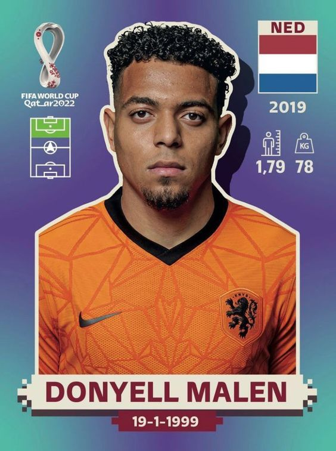TÉCNICO
Louis van Gaal

TÍTULOS
EuroCopa de 87-88
1x Campeã
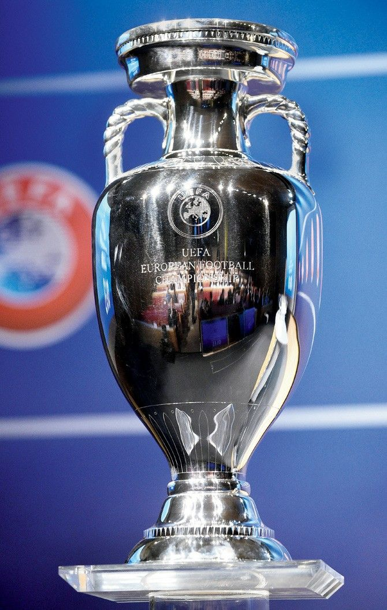
JOGADORES LENDARIOS
GOLEIRO
Van Der Sar

ZAGUEIROS
Frank de Boer
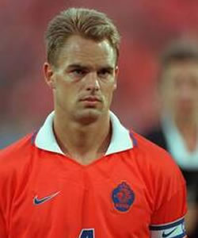Ronald Koeman
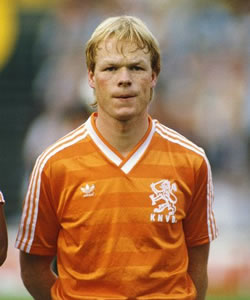Wim Surbieer
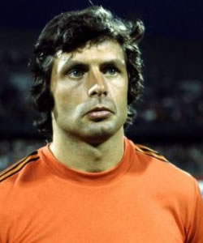Ruud Krol
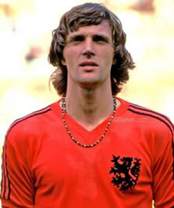MEIAS
Frank Rijkaard
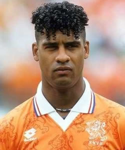Johan Cruyff

Ruud Gullit
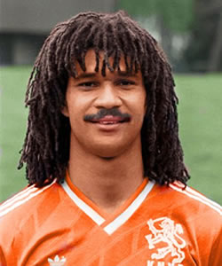Edgar Davids
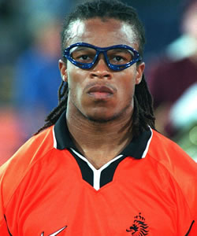ATACANTES
Van Baten
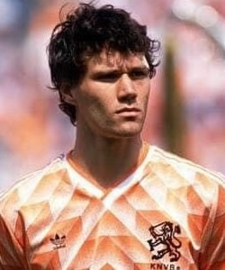Dennis Bergkamp

Arjen Robben
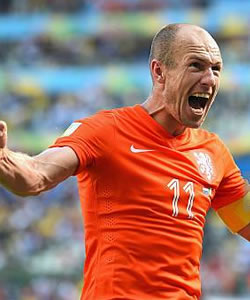